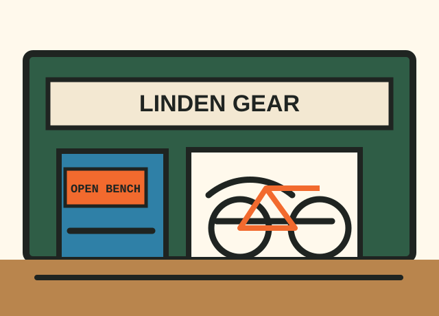
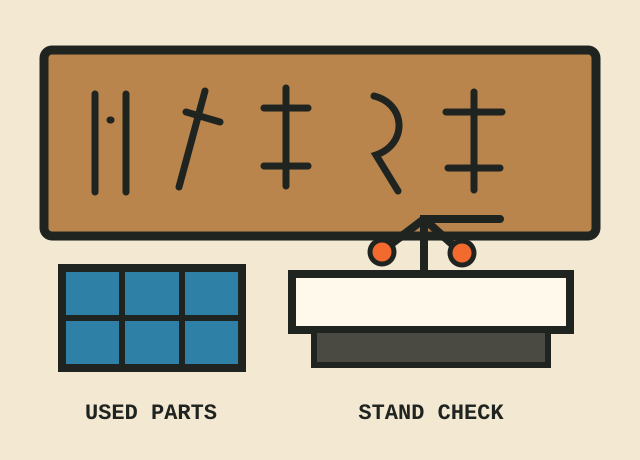
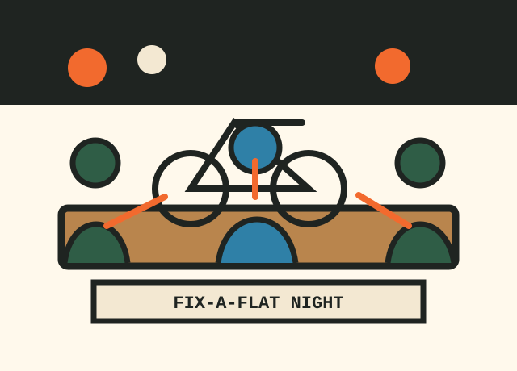
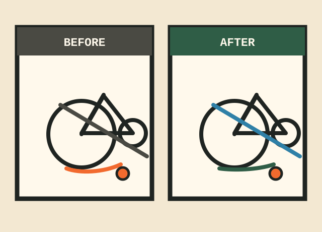

Tubes, tires & pressure
For punctures, slow leaks, cracked tires, damaged rim strips, and mystery flats that keep returning.
Typical window: same day
Neighborhood bicycle repair • commuter support • hands-on learning
Linden Gear Bike Kitchen helps everyday riders keep rolling: flat tires before work, brake rub after school pickup, e-bike diagnostics, refurbished commuter builds, and fix-it clinics for riders still learning the vocabulary.
Tube, tire, rim strip, and pressure check without a showroom speech.
Chain wear, shifting, cassette condition, and used-parts options when they make sense.
Commuter fit notes, lights, racks, fenders, and practical route questions.
Labeled parts-bin services
Each intake starts with plain-language symptoms, safety priorities, an estimate range, and whether the job can happen while you wait.
For punctures, slow leaks, cracked tires, damaged rim strips, and mystery flats that keep returning.
Typical window: same day
Rubbing pads, soft levers, worn cables, squeal, pad replacement, and stop-before-the-hill safety checks.
Scope: quick adjust to pad service
Skipping gears, bent hangers, cable stretch, chain wear, derailleur alignment, and drivetrain cleaning notes.
Estimate after stand check
Practical setup for school runs, grocery stops, rainy mornings, night riding, and secure daily storage.
Parts new or used when appropriate
Spring wake-ups, winter prep, bearing checks, cables, housing, drivetrain wear, and full reliability plans.
Turnaround: posted at intake
Family bikes, delivery rigs, brake wear, tire load, accessory wiring questions, and diagnostic triage.
Appointment recommended
After a spill or curb hit, we check bars, fork, wheels, frame alignment clues, brakes, and safe next steps.
Do this before riding again
When a used derailleur, rack, saddle, or wheel is a safe fit, we explain the tradeoffs before installing.
Availability changes weekly
First-visit guidance
We do better work when we know what happened: the pothole, the winter storage, the new commute, or the noise that only shows up on hills.
Corkboard calendar
Low-pressure classes and rides for people who use bikes as transportation, not as a personality test.
Hands-on tube changes, patch kits, tire levers, inflation, and what to carry on a short commute.
Bring: your front wheel if possible
A gentle route for new riders, cargo bikes, students, and anyone testing lights, racks, or confidence.
Meet: shop rack, 6:15 pm
Learn pad wear signs, cable feel, rotor care, rim cleaning, and when to stop adjusting and replace.
Tools supplied at the bench
Family bike checks, helmet-fit notes, kid-seat hardware, pressure checks, and school route questions.
Drop-in afternoon
What kind of shop this is
Linden Gear is built around transportation reliability: bikes that carry groceries, kids, laptops, delivery bags, library books, and weekend picnic gear. We explain the work, offer refurbished commuter builds when available, and use secondhand parts only when they are safe, compatible, and honestly better for the rider's budget.
Questions are part of the service. If you do not know the name of the part making the noise, point to it. We will translate it into a repair plan.
Shop-wall gallery




Ask before you haul it over
Send a photo of the problem area, the bike style, and when you need it back. For school or workplace tune-up visits, include the number of bikes and whether indoor space is available.
Call or text: (555) 014-2530
Accessibility needs, storage questions, and route concerns are welcome. We would rather plan the visit than make you guess.